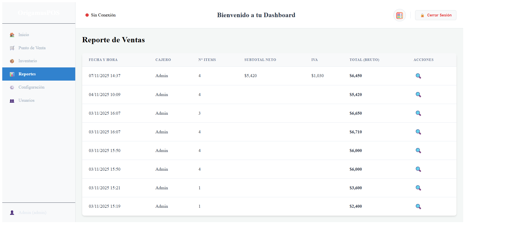
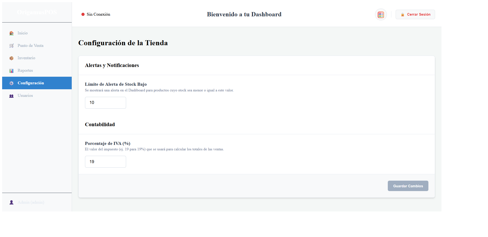
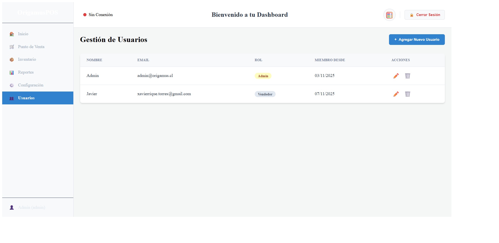
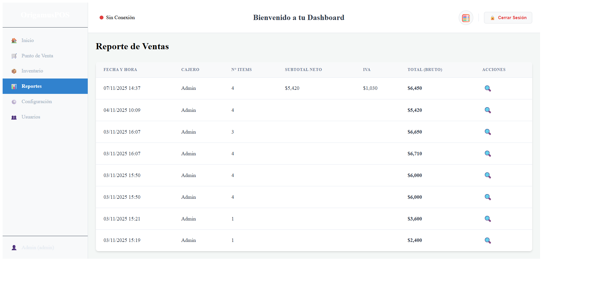
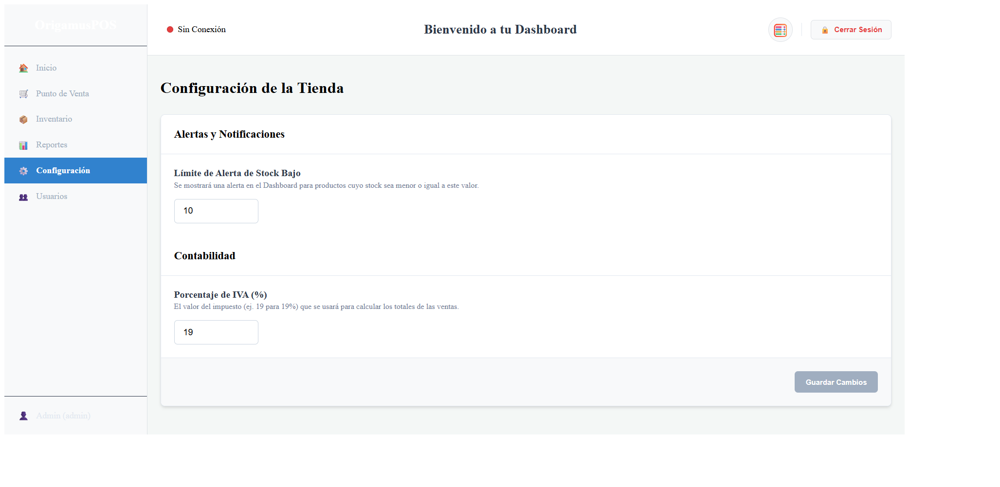
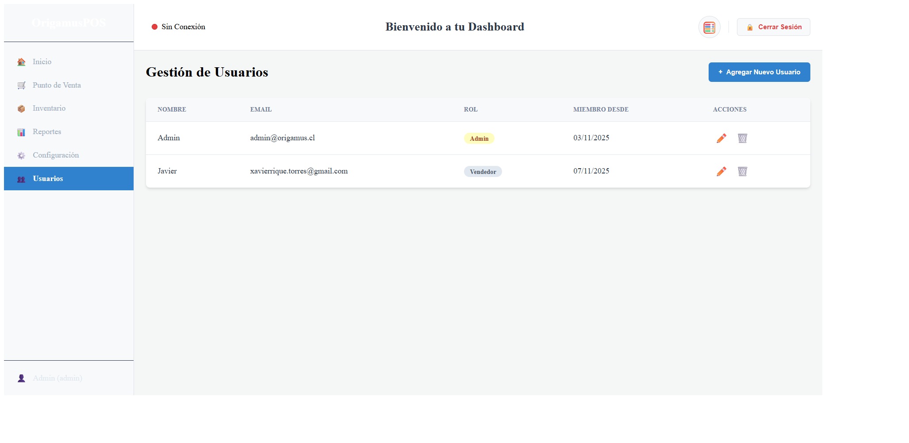

OrigamusPOS - Control Total para tu Negocio
¿Qué es OrigamusPOS? Es una solución de Punto de Venta (POS) moderna,
diseñada para digitalizar tu tienda o almacén. Olvídate del cuaderno
y la calculadora; nuestra app automatiza el flujo de ventas, calcula el IVA
y gestiona tu inventario en tiempo real desde la nube.
Beneficios Principales
Punto de Venta Inteligente: Agiliza tus ventas. Permite al cajero
buscar productos por nombre o código, ver el stock disponible en tiempo real
y calcular el desglose de impuestos (Neto, IVA, Total) automáticamente.
Evita errores de cobro y ventas de productos sin stock.
Gestión de Inventario Centralizada: Nunca más te quedes sin stock.
El sistema descuenta las unidades automáticamente con cada venta.
Las alertas de stock bajo (que tú mismo configuras) te notifican en
el panel principal qué productos debes reponer.
Inteligencia de Negocio: Toma decisiones basadas en datos. El administrador
accede a un panel (Dashboard) con los vitales del día (ventas, ticket promedio)
y gráficos de rendimiento. Los reportes detallados te permiten ver el historial
completo de transacciones.
Administración Centralizada: El administrador dispone de herramientas potentes divididas en cuatro paneles clave:
Gestión de Inventario: Un CRUD (Crear, Leer, Editar, Borrar) completo para tus productos.
Añade nuevos artículos, edita precios o elimina productos descontinuados fácilmente
desde una tabla con buscador integrado.
Control de Usuarios: Crea, edita o elimina las cuentas de tus empleados.
Asigna roles (Administrador o Vendedor) para restringir el acceso
a secciones sensibles como los reportes o la configuración.
Reportes de Ventas: Monitorea todas las transacciones. Accede a un historial
completo de ventas y haz clic en cualquier registro para ver el detalle de la boleta,
incluyendo el desglose de Neto, IVA y Total.
Ajustes de la Tienda: Personaliza tu POS. Define parámetros clave para tu negocio,
como el porcentaje de IVA a calcular y el límite de unidades para
las alertas de stock bajo en el Dashboard.
 




